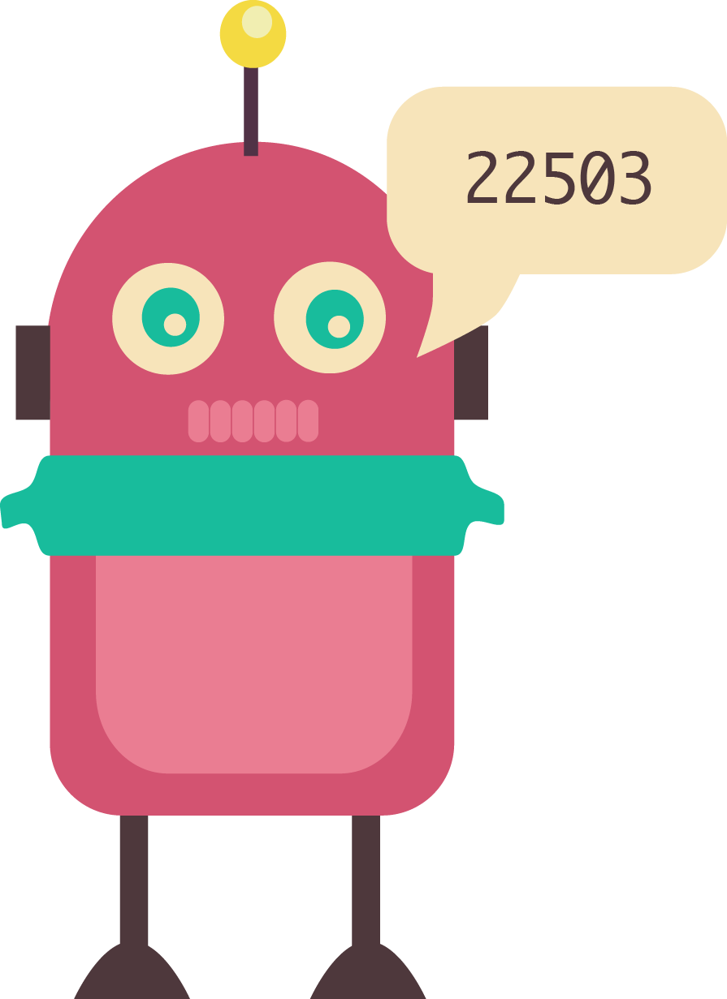
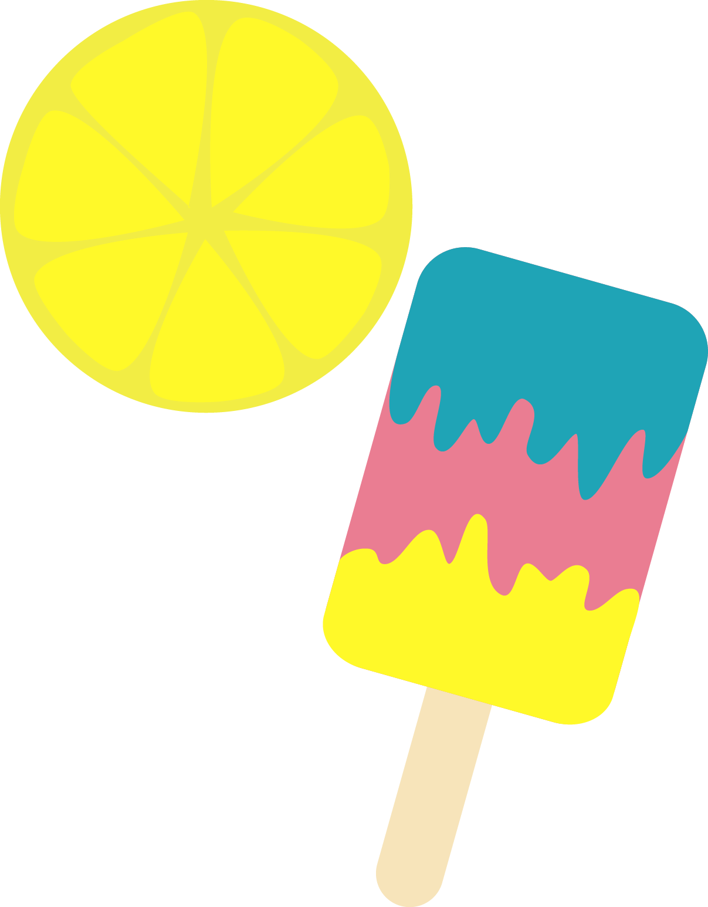
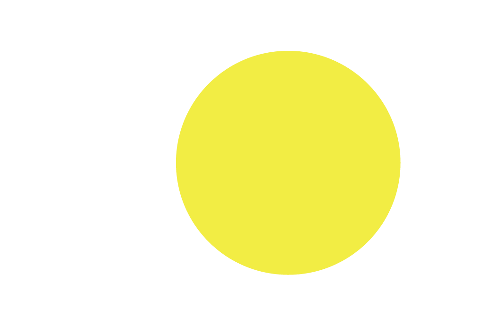
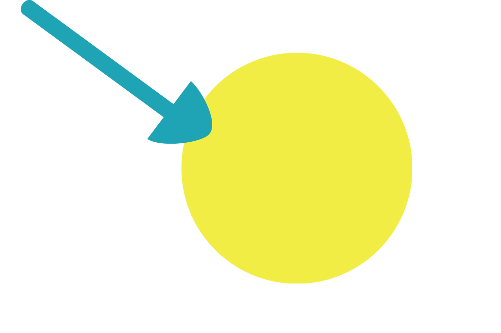
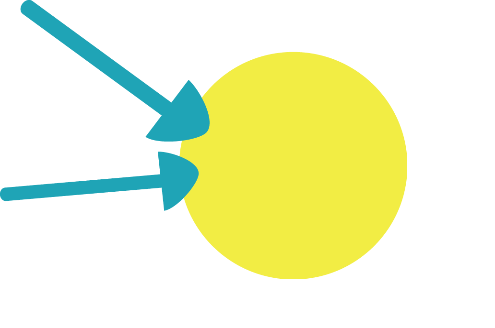
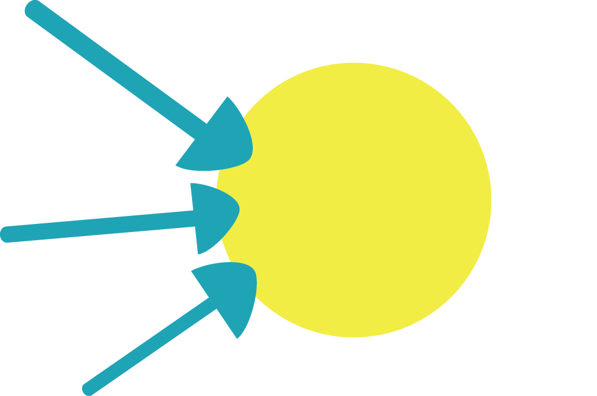
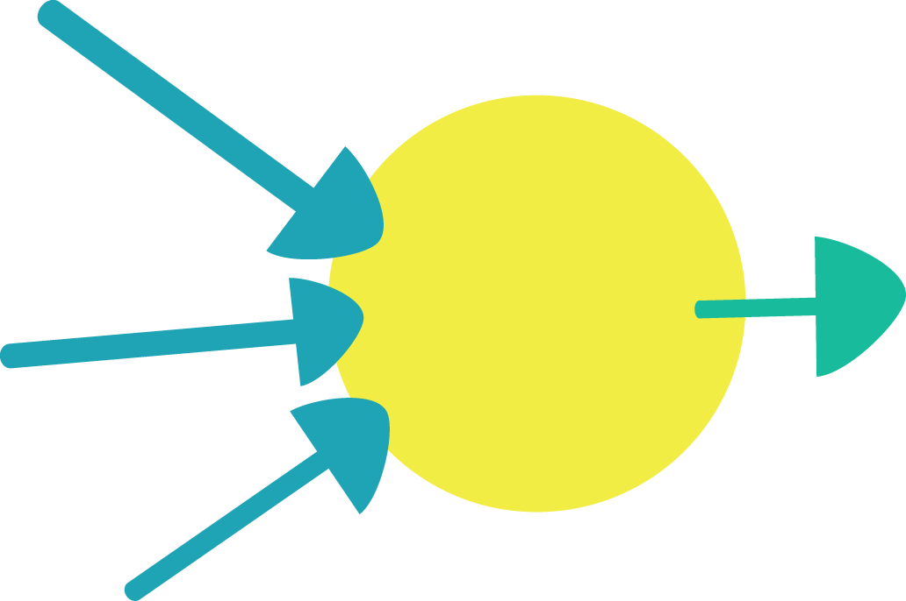
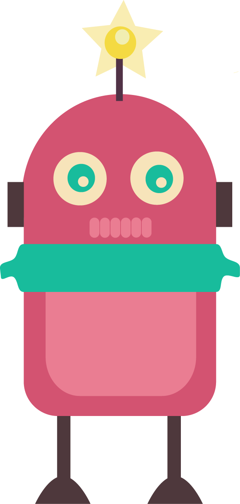

DESCRIPTION OF NEURAL NETWORK MATH TO BE ADDED
Neural Networks are just one very tiny part of how we could help robots function more like humans. There is a great deal of research being conducted all over the world on how this could become a reality. This field of study is called Artificial Intelligence.
Artificial Intelligence, commonly referred to as AI, refers to the study and creation of computer systems that are able to perform tasks that otherwise seem unique to human intelligence. For example, speech recognition which involved computers being able to hear and recognise spoken words, and convert these words into a format that can be understood by machines.
Perhaps the most common theme throughout AI is seeing whether computers can develop the ability to learn. This type of AI is called Machine Learning. It is a field of study that focuses on developing computer systems that can change and advance when exposed to new information. Most uses of AI require Machine Learning in order to exhibit human-like intelligence.
But could there be a point where AI could match human intelligence? This is a much debated and researched area within the study of AI, and one that doesn’t necessarily have a clear answer. A notable name in this field is Dr. Alan Turing, who developed the Turing Test. In this test, a person talks to both a computer and another person, and has to try and distinguish which is the AI and which isn’t. For an AI to pass this test, it must hold a series of conversations over five minutes, and must be mistaken as human at least 30% of the time. Passing this test is one particular goal of many AI researchers, and it is hotly debated amongst AI scholars whether or not any current AI can pass the test.
These days, AI is all around us to some degree. For example, technology like Apple’s Siri and Microsoft’s Cortana learns and develops from the mass of user input it collects. It is even starting to make an appearance in children’s toys. Barbie is set to soon release an interactive model of their doll which will talk to its owners and learn about them.
With AI making its way into more and more facets of life, it is definitely a field of research that is here to stay. There is a huge amount of information online, but if you’re interested, here are some resources to let you explore the topics we’ve discussed further:
This interactive lesson was created using several different pieces of video and web software.
The video was filmed in front of a green screen, which allows the use of a trick called 'chroma key compositing' to subtract the green background and replace it with other images or videos.
In this lesson, the compositing is being done directly in the web browser in real time using the chromakey tools in Seriously.js. It's JavaScript software that allows for really cool video experiments on the web.
From there, the chromakeyed video is being composited (blended) together with code running behind it in an HTML5 <canvas> element. The interactive snowflakes and trees were created in the canvas using the wonderful P5.JS library.
The P5 team also created a wonderful demo called hello.p5js.org, which served as inspiration and guidance for creatively combining video and code together in the web browser.
Timing the video with the code animations required yet another JavaScript tool called Popcorn.JS This software allows timing cues in the video to trigger other stuff to happen in the web browser at the same time.